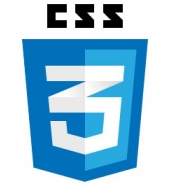

<div class="alert alert-secondary" role="alert" style="width:100%;border-radius:5px;">
  <span>
    This Website was Created Solely Using :
    &nbsp;&nbsp;&nbsp;&nbsp;&nbsp;&nbsp;&nbsp;&nbsp;
    <a href="https://angular.io/" target="_blank">
      
    </a>&nbsp;&nbsp;&nbsp;&nbsp;&nbsp;&nbsp;&nbsp;&nbsp;&nbsp;&nbsp;&nbsp;&nbsp;
    <a href="https://www.typescriptlang.org/" target="_blank">
      
    </a>&nbsp;&nbsp;&nbsp;&nbsp;&nbsp;&nbsp;&nbsp;&nbsp;&nbsp;&nbsp;&nbsp;&nbsp;
    <a href="https://www.w3schools.com/html" target="_blank">
      
    </a>&nbsp;&nbsp;&nbsp;&nbsp;&nbsp;&nbsp;&nbsp;&nbsp;&nbsp;&nbsp;&nbsp;&nbsp;
    <a href="https://getbootstrap.com/" target="_blank">
      
    </a>&nbsp;&nbsp;&nbsp;&nbsp;&nbsp;&nbsp;&nbsp;&nbsp;&nbsp;&nbsp;&nbsp;&nbsp;
    <a href="https://www.w3schools.com/css/" target="_blank">
      
    </a>&nbsp;&nbsp;
  </span>
  </div>